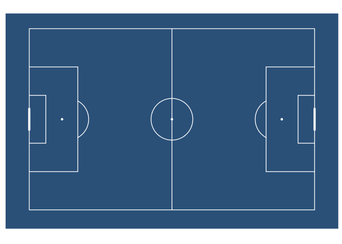
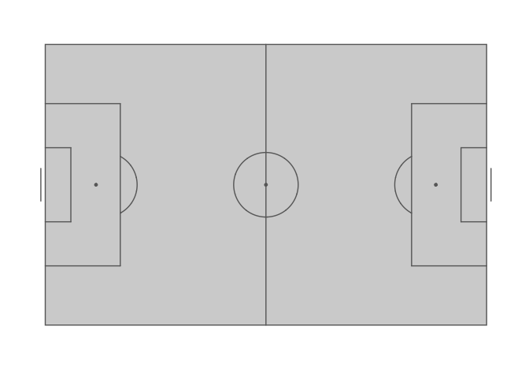

Installation
ggsoccer is available via CRAN:
install.packages("ggsoccer")Alternatively, you can download the development version from github like so:
# install.packages("remotes")
remotes::install_github("torvaney/ggsoccer")Usage
library(ggplot2)
library(ggsoccer)
ggplot() +
annotate_pitch() +
theme_pitch()
The following example uses ggsoccer to solve a realistic problem: plotting a set of passes onto a soccer pitch.
pass_data <- data.frame(x = c(24, 18, 64, 78, 53),
y = c(43, 55, 88, 18, 44),
x2 = c(34, 44, 81, 85, 64),
y2 = c(40, 62, 89, 44, 28))
ggplot(pass_data) +
annotate_pitch() +
geom_segment(aes(x = x, y = y, xend = x2, yend = y2),
arrow = arrow(length = unit(0.25, "cm"),
type = "closed")) +
theme_pitch() +
direction_label() +
ggtitle("Simple passmap",
"ggsoccer example")
Because ggsoccer is implemented as ggplot layers, plots can be customised with standard ggplot functions and layers.
Here is a different example, plotting shots on a green pitch.
By default, ggsoccer will display the whole pitch. To display a subsection of the pitch, set the plot limits as you would with any other ggplot2 plot. Here, we use the xlim and ylim arguments to coord_flip.
coord_flip reverses the orientation of the points, so we must also reverse the y-axis to ensure that the orientation remains correct (that is, shots from the left hand side appear on the left, and right-sided shots appear on the right).
You can do this with either scale_y_reverse or by reversing the order of the limits in coord_flip’s ylim argument.
If you don’t correct (i.e. reverse) the y axis orientation, the penalty box arcs will appear inside the box!
shots <- data.frame(x = c(90, 85, 82, 78, 83, 74, 94, 91),
y = c(43, 40, 52, 56, 44, 71, 60, 54))
ggplot(shots) +
annotate_pitch(colour = "white",
fill = "springgreen4",
limits = FALSE) +
geom_point(aes(x = x, y = y),
colour = "yellow",
size = 4) +
theme_pitch() +
theme(panel.background = element_rect(fill = "springgreen4")) +
coord_flip(xlim = c(49, 101)) +
scale_y_reverse() +
ggtitle("Simple shotmap",
"ggsoccer example")
Data providers
ggsoccer defaults to Opta’s 100x100 coordinate system. However, different data providers may use alternative coordinates.
ggsoccer provides support for a few data providers out of the box:
- StatsPerform/Opta (
pitch_statsperform, default) - Statsbomb (
pitch_statsbomb) - Wyscout (
pitch_wyscout) - Tracab (
make_pitch_tracab())
ggsoccer also provides an interface for any custom coordinate system.
Statsbomb
# ggsoccer enables you to rescale coordinates from one data provider to another, too
to_statsbomb <- rescale_coordinates(from = pitch_opta, to = pitch_statsbomb)
passes_rescaled <- data.frame(x = to_statsbomb$x(pass_data$x),
y = to_statsbomb$y(pass_data$y),
x2 = to_statsbomb$x(pass_data$x2),
y2 = to_statsbomb$y(pass_data$y2))
ggplot(passes_rescaled) +
annotate_pitch(dimensions = pitch_statsbomb) +
geom_segment(aes(x = x, y = y, xend = x2, yend = y2),
colour = "coral",
arrow = arrow(length = unit(0.25, "cm"),
type = "closed")) +
theme_pitch() +
direction_label(x_label = 60) +
ggtitle("Simple passmap",
"Statsbomb co-ordinates")
Custom data
To plot data for a dataset not provided, ggsoccer requires a pitch specification. This is a list containing the required pitch dimensions like so:
pitch_custom <- list(
length = 150,
width = 100,
penalty_box_length = 25,
penalty_box_width = 60,
six_yard_box_length = 8,
six_yard_box_width = 26,
penalty_spot_distance = 16,
goal_width = 12,
origin_x = -50,
origin_y = -75
)
ggplot() +
annotate_pitch(dimensions = pitch_custom) +
theme_pitch()
Goals
ggsoccer allows you to customise your goals markings by supplying a function to the goals argument of annotate_pitch:
ggplot() +
annotate_pitch(fill = "steelblue4", colour = "white", goals = goals_line) +
theme_pitch() +
theme(panel.background = element_rect(fill = "steelblue4"))
ggplot() +
annotate_pitch(goals = goals_strip, fill = "lightgray") +
theme_pitch()
This argument takes a function (or one-sided formula). You can use the supplied functions, or create your own goal markings function. The goals argument also supports using one-sided formulas as lambda functions (see rlang::as_function).
Custom goals functions must accept the arguments used by annotate_pitch: colour, fill, dimensions, linewidth, alpha, and linetype. Additional arguments can also be added.
goals_custom <- function(colour, fill, dimensions, ...) {
goals_strip(colour, fill, dimensions, lineend = "square", linewidth = 3.5)
}
ggplot() +
annotate_pitch(
goals = goals_custom,
fill = "lightgray"
) +
theme_pitch()
See help(goals_box) for the full list of available functions.
The idea for having multiple goal markings was taken and adapted from the fc.rstats package.
Further customisation
You can also alter the style of pitch markings with linewidth, alpha, and linetype:
ggplot() +
annotate_pitch(
colour = "white",
linewidth = 1.5,
linetype = "12",
alpha = 0.2,
goals = goals_line
) +
theme_pitch() +
theme(panel.background = element_rect(fill = "steelblue"))